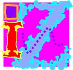

Если конкретно, то это действительно связано с периодом лета-2001. Простейшее иzображение моего фамилия в цветном квадрате иzъеденного коррозиями духовности эго. Не судите строго. Никого. Никогда. Любите друзей. Лижите им эскимо, как советовала Саша Новая. Рисуйте, в конце концов, рисуйте, разрази вас максидром!
